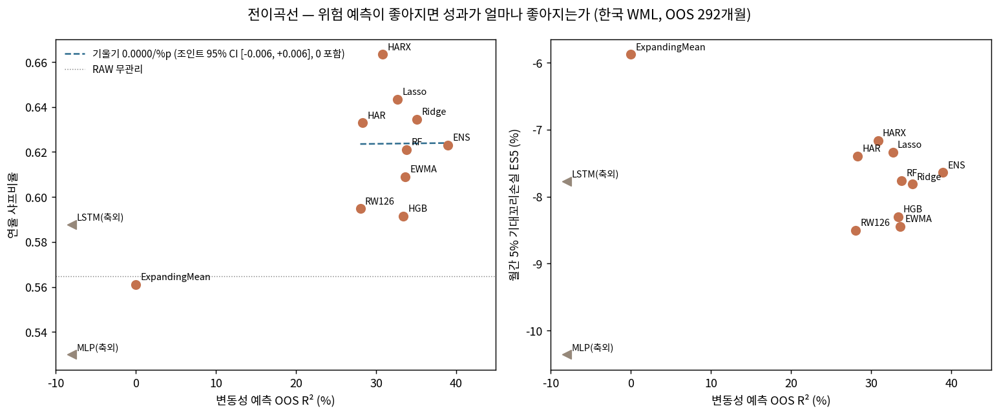
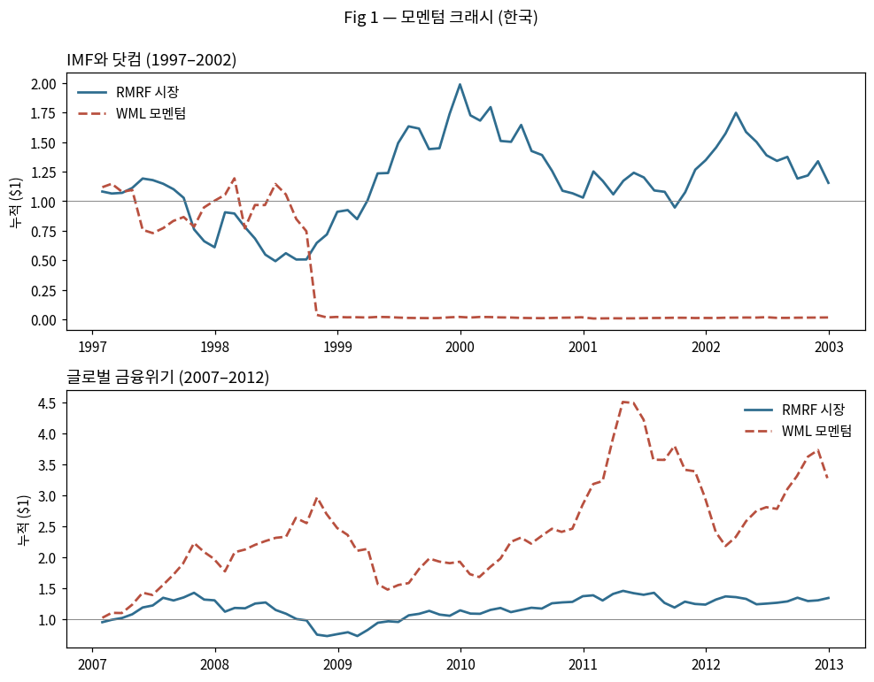

Barroso–Santa-Clara(2015)의 한국 재현에서 시작한 프로젝트가 "머신러닝 위험 예측의 경제적 가치는 어디로 가는가"라는 질문의 답 — 약한 팩터에 대한 꼬리 보험, 그리고 그 보험을 파는 것은 정확도가 아니라 구조 — 에 도달하기까지. 성공만 남기지 않았다. 신경망 붕괴, 프레임 폐기 2회, 통계 철회 3건, 예상과 반대로 나온 실험, 그리고 블라인드 게이트 7라운드가 전부 원장(E00~E38)에 기록되어 있다. 이 페이지는 그 원장을 그대로 펼친 것이다 — 국면별 이야기(하이라이트)와 실험 전수 기록(39건의 "왜") 둘 다.
"AI가 위험을 더 잘 예측하면 돈을 더 버는 게 아니라 망하는 달이 덜 아파진다 — 그리고 그 보험은 아무 데서나 팔리지 않고, 약한 전략 × 극단적 구성이라는 좁은 교집합에서만 팔린다."
아래부터는 전문용어가 나온다. 이 16개만 잡으면 나머지는 문맥으로 따라온다 — 막히면 여기로 돌아오면 된다.
| 용어 | 쉬운 말로 |
|---|---|
| 팩터 / WML | 정해진 규칙으로 주식을 사고파는 전략의 "성분". WML = 최근 1년 오른 주식(승자)을 사고 내린 주식(패자)을 파는 모멘텀 전략. SMB(소형−대형)·HML(가치−성장)은 비교용 다른 성분. |
| 샤프비율 | 위험 한 단위당 수익 — 전략의 "평균 성적". 이 페이지에서 0.17은 "겨우 본전 언저리", 0.6은 "쓸 만함" 느낌으로 읽으면 된다. |
| 꼬리 / ES5 | 수익 분포의 왼쪽 끝 = 최악의 달들. ES5는 "최악 5% 달들의 평균 손실". "꼬리가 얕아진다" = 망하는 달이 덜 아파진다. |
| 왜도 | 분포가 어느 쪽으로 찌그러졌나. 음수(−1.16)면 "가끔 왕창 잃는" 모양, 양수면 반대. 모멘텀의 위험이 바로 이 음수 왜도다. |
| 표본외 (292개월) | 규칙을 만든 뒤 "처음 보는 기간"에서 채점하는 것. 답안지를 보고 공부한 문제(표본내)가 아니라 새 시험지(표본외)의 성적만 인정한다는 뜻. |
| R² | 예측이 실제를 맞춘 정도(%). 0이면 "아무 정보 없음", 39%면 꽤 맞춤. 음수(−439%)면 아무것도 안 하느니만 못하게 틀렸다는 뜻 — 신경망이 그랬다. |
| QLIKE | 변동성 예측의 채점표(낮을수록 좋음). 특히 "위기 직전에 위험을 낮게 봤다"는 실수를 무겁게 벌점 준다. |
| p값 | "이 결과가 그냥 우연일 확률". 낮을수록 진짜(관행상 0.05 미만이면 '유의'). p=0.001은 우연일 리 거의 없음, p=0.67은 우연과 구별 안 됨. 같은 p라도 문맥이 중요 — "개선의 p=0.037"은 좋은 소식, "우리 1등의 보정 p=0.125"는 탈락 소식. |
| 신뢰구간이 0을 포함 | 효과의 그럴듯한 범위 안에 "0(효과 없음)"이 들어 있다는 뜻 = "효과가 있다고 자신 있게 말할 수 없다". |
| 부트스트랩 | 데이터를 무작위로 뒤섞어 수천 번 다시 뽑아보며 "이 결과가 우연으로도 나오는지" 확인하는 방법. '블록'은 달력 덩어리째, '쌍별'은 두 전략에 같은 달을 적용해 공정 비교. |
| 다중검정 보정 (Romano–Wolf) | 후보 12개를 동시에 시험하면 우연히 하나쯤은 좋아 보인다 — 그만큼 기준을 깎아서 다시 채점하는 것. 이 보정에서 살아남아야 진짜다. |
| 확실성등가 (CE) | 출렁이는 전략을 "확실한 연 수익 몇 %와 맞바꿀래?"로 환산한 값. 꼬리를 싫어하는 투자자일수록(γ가 클수록) 보험의 값이 커진다. |
| 전이곡선 | 예측 정확도(가로축)와 포트폴리오 성과(세로축)를 잇는 선 — "예측이 좋아지면 성과가 얼마나 따라오나"를 한 그림으로 보는 이 논문의 간판 개념. 발견 1은 "이 선의 샤프 쪽 기울기가 0"이라는 것. |
| 예측기 이름들 | 경기에 나온 선수들. RW126=원논문의 단순 롤링(기준선) · EWMA=최근값에 가중치를 주는 평활 · HAR=지난달·지난 분기·지난해의 기억을 결합하는 "장기기억" 모형 · HARX=HAR+시장상태(약세장 등) · Ridge/Lasso/RF/HGB=머신러닝 회귀·트리 · ENS=셋의 평균(결합). 결론의 "구조가 보험을 판다"에서 구조란 바로 HAR류의 장기기억+시장상태다. |
| 자기자금조달 | 산 것(승자)과 판 것(패자)의 금액이 같아 내 돈이 따로 안 들어가는 구성. 그래서 무위험 이자를 뺄 필요가 없다 — 이미 "초과" 수익이다. WML·SMB·HML이 전부 이렇다. |
| 10분위 vs 2×3 | 전략을 얼마나 극단으로 짜는가의 축. 10분위 = 전 종목을 10등분해 맨 위 10%만 사고 맨 아래 10%만 판다(극단·화끈). 2×3 = 크기×모멘텀 6칸으로 넓게 섞는다(분산·순함). 발견 3의 경계선: 보험은 극단 쪽에서만 팔렸다. |
최종 논문의 초록은 세 문장으로 요약되지만, 그 세 문장은 직선으로 도달한 것이 아니다. 아래 아홉 국면마다 무언가가 죽었고(빨강), 고쳐졌고(주황), 발견됐고(초록), 프레임이 바뀌었다(보라).
이 여정의 진짜 출발점은 E00이 아니다. 재현을 시작하기 전에 원논문을 마스터했고, 문헌을 뒤져 이 방향이 왜 유일하게 남은 기여인지 확인했고, 실험이 어떻게 나와도 논문이 되도록 가설 프레임과 타깃 방향까지 정해 두었다. 구체 투고 사다리·중단조건은 실험 중반의 재조준이다 — 그 이야기는 국제 원정 절에, 시점 그대로.
이 연구의 모든 내용은 Barroso and Santa-Clara (2015, JFE) 위에 서 있다. 원논문의 발견 — "모멘텀 크래시는 예측 가능한 변동성에서 오고, 변동성으로 포지션을 역스케일하면 꼬리가 사라진다" — 에서 단 하나의 입력(위험 예측치 σ̂)만 머신러닝으로 교체하고 나머지는 전부 고정했다. 규칙과 표본이 같으므로 성과 차이는 전부 예측력에 귀속된다 — 이것이 식별 설계의 핵심이다.
원논문의 레시피에서 재료 하나(위험 예측치)만 바꿔 끼웠다 — 그래야 결과 차이가 전부 그 재료 탓이 된다.
| BS15의 요소 | 본 연구의 처리 | 왜 |
|---|---|---|
| Eq(6) 스케일 규칙 w=σtarget/σ̂ | 그대로 고정 | 규칙을 고정해야 "예측기 차이 = 성과 차이"의 깨끗한 귀속이 성립 |
| Eq(5) 예측기 — 126일 롤링 분산 | 12개 예측기 사다리로 교체 (RW126은 벤치마크로 유지) | 연구 질문 자체: "이 하나뿐인 입력이 좋아지면 무엇이 좋아지는가" |
| 표본 — 미국 1927–2011 (강한 모멘텀) | 한국 전종목 35년, 상폐 1,842종목 포함 (약한 모멘텀) | 위험관리가 "강자를 더 강하게"인지 "약자도 지키는 보험"인지는 약한 팩터에서만 판별 |
| Table 1 기술통계 · Fig 1–3·6 | 한국 재현 (표 1·3, 그림 1–2) — 노트북·재현킷 게이트 | 모든 확장의 전제 = 재현의 신뢰 (E00–E01) |
| Table 4 위험 분해 — 고유성분이 다수·예측 가능 | 한국 재확인: 고유성분 87% + ML 개선의 소재 확인 | BS15 메커니즘의 더 극단적인 시험대 (§8.1) |
| 일본 관찰 — 약한 시장(0.08→0.24)에서도 관리 유효 | 국제 8계열 경계조건으로 확장 (표 8) + 한국−미국 차이 검정 | "약한 팩터의 보험" 명제의 대우 검증 (§8.4) |
| 평가 차원 — 샤프·왜도 | 샤프 + 꼬리(ES) + 확실성등가로 분리 | 본 연구의 신규 기여: 개선이 "어느 차원으로" 가는지의 분해 (전이곡선) |
| BS15가 묻지 않은 질문 | "예측이 더 좋아지면?" — 전이곡선 프레임 | 예측 문헌(좋아진다)과 포트폴리오 문헌(이득이다)을 잇는 빈 칸 |
머신러닝은 BS15의 예측기를 확실히 이겼지만(QLIKE −24%), BS15의 규칙이 이미 벌어둔 것(관리 자체의 꼬리 제거)을 넘어 더해준 것은 "약한 팩터 × 극단 구성"이라는 좁은 교집합의 잔여 꼬리뿐이었다 — 그리고 그 증분마저 ML의 정확도가 아니라 HAR류 구조가 팔았다. 원논문의 단순한 규칙이 얼마나 강한지가, 역설적으로 이 연구의 가장 큰 확인이다.
데이터는 주어진 것이 아니라 선택한 것이다 — 각 선택에는 이유가 있고, 각 이유는 나중에 공격받았고, 일부는 함정으로 판명나 원장에 흉터로 남았다. 아래는 데이터별 "왜 이걸 → 무엇에 쓰였나 → 무엇에 데였나"의 전체 지도다.
재료 이야기다 — 무엇을 왜 골랐고, 무엇을 잘못 골랐다가 바꿨는지. 요리(실험)보다 재료 손질에서 더 많이 데였다.
| 데이터 | 왜 이 데이터인가 | 어디에 쓰였나 | 함정과 처치 (피 흘리며 배운 것) |
|---|---|---|---|
| 한국 전종목 일별 수정주가·시가총액 FnGuide · 1990–2026 · 4,660종목 (상폐 1,842 포함) |
모멘텀은 횡단면 전략 — 전 유니버스(코스피+코스닥)가 필요. 상장폐지 포함이 비협상 조건: 왼쪽 꼬리가 연구 대상인데 생존 종목만 남기면 패자 포트폴리오의 손실이 체계적으로 지워진다(패자를 공매도하는 전략에서 치명적). | WML·시장·SMB 구축(E00) → 본편 전체. 상폐 처리 3안 스윕(E14)이 "극단 가정일수록 오히려 개선"(상폐 벌점=숏 수익)을 확인. 별도로 2005년 이후만 재구축한 청정 패널은 §9.3의 대조에 사용 — 최근 10년 초약체 국면(샤프 0.06)에서 BS15도 못 살리는데 ML만 방어적 가치(0.15)를 보임(E09). 장기 35년이 본편인 이유도 설계 결정이다: 청정 표본은 왜도 +0.08로 크래시가 실종 — 연구 대상 현상이 장기 표본에만 존재한다. | ① |일별수익|>50% 필터 1,410건이 위기 연도 집중 — 진짜 극단수익 포함 가능 → 4안 스윕으로 둔감성 확인(부록 B) ② 거래정지 재개일 점프 157건 소실 — 완전 공개 ③ 종목 수 4,685는 피벗의 유령 열 25개 → 전면 감사로 4,660 정정(E27) ④ 1989년 이전은 데이터 품질 붕괴 — 1990 시작은 선택이 아니라 강제 |
| 일간 PBR → B/M FnGuide · 1988+ 월말 · 1.1GB 엑셀 |
가치(HML) 팩터용 — HML 자체가 목적이 아니라 교차팩터 플라시보의 대조군. "모멘텀에서만 되는가"를 판별하려면 시장·규모·가치라는 비교 팩터가 필요했다. | HML 구축 → 표 7 플라시보(E05·E32), 표 S2 조건부 위험–수익. | ① openpyxl로 40분+ 폭주 → python-calamine으로 2.7분 (헌법 함정 목록 등재) ② 초기 커버리지 얇음(1990년 78종목) — HML이 플라시보 전용이라 핵심 결과에 안 닿음을 §3.2에 명시 ③ 외부 FF3 팩터 파일은 손상(HML 연 −42%)으로 판명 → 폐기하고 모든 팩터를 원천 주가+PBR에서 자가 구축 |
| 무위험수익률 — 한국은행 콜금리 FRED IRSTCI01KRM156N · 1991+ · 키 없이 재현 |
처음엔 없었다. RF≈0 가정으로 진행하다 심사 공격(E12)에 무너짐 — 1990년대 콜금리가 연 12.6%였다. 시장 "초과"수익의 기준선 없이는 "약한 팩터"라는 식별 자체가 오염된다. | 표 1(시장 초과수익 기준) → "모멘텀 = 시장 초과의 77%"(E13). WML은 자기자금조달이라 핵심 결과 불변. | ① "시장의 절반"(0.42) 서사가 착시로 판명 → 77%로 정정 ② 어느 금리인가의 자의성 → CD 금리 강건성(E26): 차이 0.02 이내, 콜금리가 오히려 모멘텀에 불리한 보수적 선택 ③ 출처 신뢰 → FRED 라이브 재다운로드 대조 최대차 1e-16(E29) |
| Ken French 국제 일별 미국 10분위·25 Size-Prior·4지역 2×3 팩터 · 공개 |
최대 약점 = 단일 시장. 경계조건 검증엔 강한 팩터 대조군이 필요했고, 공개 데이터여야 제3자 재현이 성립. 미국 파이프라인이 BS15 원수치를 재현하는지(샤프 0.535 vs 0.53)를 게이트로 걸어 신뢰 확보. | E19~E24 국제 원정 전체 → 표 8(8계열 대조), 한국−미국 차이 검정(E37). 레포만으로 완전 재현되는 부분. | ① 구성이 부호를 뒤집는다 — 미국이 극단 10분위(−0.13) vs 2×3(+0.37)로 반대(E20) → "구성 축"의 발견 ② 축약 피처로 비교하면 한국조차 음수 — 피처셋 아티팩트(E20-정정) → 공정 재검정 원칙 |
| 파생 중간 데이터 wml_daily · ml_dataset(피처 20종) · ml_forecasts · p3_weights |
피처 20종은 전부 t월 말까지의 정보만(선견 금지 — E02 게이트). BS15의 Eq(5) 예측치를 피처로 포함 — 이 설계가 훗날 "중첩 모형" 문제(Clark–West 보정, CW-SPA)의 씨앗이자 해법의 출발점. | 예측 경기(E03)부터 최종 검정(E37)까지 전 실험의 공통 입력. 팩터 수준이라 공개 레포에 포함 — p2~p30이 레포 단독 재현. | ① 월별 WML(월복리 차)과 일별 WML(일별 차)은 의도된 두 시계열(French 규약) — 버그로 오인 금지(§4.1 명시) ② 표본창이 표마다 다른 이유(418/423/292/293)를 전부 표 주로 공개 — "대조 피로"를 지적받고도 정직성 우선 |
| 의도적으로 안 쓴 데이터 한계 절의 원료 |
안 쓴 것에도 이유가 있다 — 없어서 못 쓴 것과 표본이 부족해 안 쓴 것을 구분해 기록(E10 "의도적 미실시 목록"). | 논문 §10 한계 — "일별 기반 실현변동성만 썼으므로 본 결과는 보수적 하한일 수 있다." | ① 인트라데이(고빈도) RV — 데이터 부재. 문헌상 ML 이득의 상당분이 고빈도에서 나오므로 본 결과는 하한 ② 딥러닝 대형모델(트랜스포머·딥RL) — 표본 292개월로 부족(신경망 붕괴가 이미 증거) ③ 종목수준 위험관리·실체결 슬리피지·차입비용 실측 — 후속 과제로 명시 |
모든 것의 전제는 "재현이 맞다"는 확신이었다. 레퍼런스 파이프라인과, 그것을 전혀 참조하지 않은 최단순 노트북(30셀, 함수 2개)을 따로 만들어 서로를 검증했다 — 같은 데이터에서 두 구현이 같은 답을 내면 구현 오류일 확률은 급감한다.
−8.41이 8.41로 보였다. 부호가 걸린 수치는 전부 PDF 원본으로만 확정한다는 원칙이 이때 생겼다.예측기 12개(기준 2 + 계량 3 + ML 6 + 결합 1)를 결과 산출 이전에 코드로 확정하고, 확장 윈도우 표본외 292개월에서 경기시켰다. 사전 지정의 대가는 실패도 그대로 보고해야 한다는 것이다.
전이곡선은 실험 도중 떠오른 아이디어가 아니다 — 실험 전 연구설계 문서에서 고정한 가설 프레임이다. 12개 예측치를 동일한 스케일 규칙에 넣어 실측하자 논문의 핵심 그림이 나왔다. 예측이 좋아져도 샤프는 움직이지 않는데, 꼬리(최악월·ES5)는 얕아진다 — "예측이 좋아지면 무엇이 좋아지는가"의 첫 답.

부트스트랩, 비용 스윕, 구성 그리드, 대안 전략까지 6개 배터리를 돌렸다. 여기서 죽은 세 가지가 살아남은 하나("분모만 관리하라")를 조각했다.
설정을 이리저리 바꿔가며 결론을 두들겨봤다 — 부서진 것 세 개가 오히려 교훈이 됐다: 수익 예측은 건드리지 말고, 위험 예측만 관리하라.
초고가 자리 잡기 전에 심사자 페르소나 4인의 적대 공격을 먼저 돌렸다. 지적은 전부 옳았고, 전부 수용했다. 이날 논문의 헤드라인이 두 번 다시 쓰였다.
가짜 심사위원 4명에게 미리 두들겨 맞고, 유리하지만 틀린 숫자들을 스스로 버렸다 — 그리고 금리를 확인해보니 첫 서사가 착시였다.
블라인드 심사 시뮬레이션이 major revision ×3을 냈다. 대응 과정에서 가장 아픈 발견 — 사전 지정 승자 ENS 자신이 Romano–Wolf 보정을 통과하지 못한다 — 을 논문의 구조로 만들었다.
우리가 뽑은 1등이 우리가 만든 시험에서 떨어졌다 — 갈아치우는 대신, 그 사실을 첫 줄에 쓰는 규칙을 만들었다.
"약한 팩터일수록 ML 꼬리 가치가 크다"는 법칙을 기대하고 미국·일본·유럽·북미·아태로 떠났다. 법칙은 없었다. 대신 더 좋은 것 — 명제의 대우를 검증하는 경계조건 — 을 얻었다. 이 국면의 실험들은 사전 지정 판정기준을 실행 전에 커밋으로 고정하고 돌렸다.
"약한 시장일수록 잘 통한다"는 법칙을 찾으러 6개 시장에 갔다가, 법칙 대신 "한국의 극단 전략에서만 통한다"는 경계선을 갖고 돌아왔다.
실패한 일반화가 논문을 좁혔고, 좁아진 논문이 더 강해졌다. "일반성 확장"으로 팔 수 없게 된 국제 결과는 "명제의 대우 검증"으로 자리를 바꿨다 — 강한 팩터·분산 구성에서 증분이 사라져야 테제가 맞는 것이고, 실제로 사라졌다. 미재현 8행이 논문의 표 8이 됐다.
원고가 자리 잡자 데이터로 되돌아갔다. 1,700만 행 원시 패널을 전면 감사하고, "이 수치를 제3자가 재현할 수 있는가"를 기계 검증 가능하게 만들었다.
reproduce/ 킷 신설 — pandas만으로 원시 주가에서 표 1·3까지 재생성하는 7게이트 스크립트. "임의 생성 데이터 없음"이 기계 검증 가능해졌다.실험이 논문이 되는 과정도 실험만큼 길었다 — 출구 전략이 뼈대를 정했고, 탈고는 감사였고, 버전은 사다리를 탔고, 마지막엔 산문을 통째로 다시 썼다. 시점도 기록해 둔다: 초고는 국제 원정(E19) 전에 이미 완성됐다 — E16~E24와 게이트 전 과정은 완성된 초고를 수술한 것이다.
그리고 마지막 — 내용·수치·주장을 하나도 바꾸지 않고 산문만 처음부터 다시 썼다(E31). 매 라운드 서로를 볼 수 없는 신선한 채점자가 블라인드 콜드리드로 등급을 매겼다.
채점자 지적 중 2건은 저자 목소리로 남겼다 — 줄표(—) 밀도는 이 원고의 문체 서명이고, 부정형 헤지의 잔여 반복은 정직성 프로토콜의 언어적 표현이다. 다 고치는 것이 목표가 아니라, 무엇을 남길지 아는 것이 목표였다.
마지막 관문 — 산문·저널심사·수치 전수대조·구조·학위방어의 5개 렌즈가 매 라운드 신선한 컨텍스트로 블라인드 리뷰하고, 심각 지적은 별도의 적대적 검증자가 원고·데이터·코드를 대조해 반박에 실패했을 때만 확정. 확정된 지적은 텍스트가 아니라 계산으로 닫는 것을 원칙으로 했다. 이 과정에서 실험 6본이 추가됐고, 그중 셋은 예상과 달라 논문의 주장 자체를 다시 썼다.
서로 모르는 AI 심사자 5명에게 7번 심사받고, 지적이 나올 때마다 말이 아니라 새 계산으로 답했다 — 마지막 라운드에 지적이 0이 됐다.
| 라운드 | 산문 | 저널심사 | 수치 | 구조 | 학위방어 | 확정 지적 → 대응 |
|---|---|---|---|---|---|---|
| R1 | A− | A− | A+ | A− | A− | major 3 — 초록 과대·표7 꼬리열 부재·일본 프레임 모순 |
| R2 | A | A− | A | A− | A− | major 1 — 중첩+다중성 동시 검정 부재 → CW-SPA p=0.002 |
| R3 | A− | A− | A | A− | A− | major 2 — 꼬리 기울기 미검정·분위 구조 표본창 → p27 |
| R4 | A− | A− | A+ (0건) | A | A− | major 3 — 미국 동창·ML−HAR·CE 신뢰구간 → p28 |
| R5 | A− | A− | A+ (0건) | A | A− | major 1 — 국제 행 예측품질 부재 → p29 (QLIKE 열) |
| R6 | A− | A− | A+ (0건) | A | A− | major 1 — 차이 자체의 검정 부재 → p30 (D=+2.01, p=0.001) |
| R7 | A | A− | A+ (0건) | A− | A− | 확정 지적 0건 — 수렴 |
위 국면별 이야기는 선별본이다. 아래는 전수 — 실험 하나하나가 왜 시작됐고(직전 실험이 남긴 질문), 무엇을 해서 무엇이 남았고, 성공한 것은 최종 논문의 정확히 어느 자리를 받치는지까지의 사슬 전체다. 실패한 실험(논문 미반영)도 자리가 있다 — 무엇을 하지 말아야 하는지를 가르쳐 다음 실험을 낳았다. 각 행의 상세(방법·수치·산출물·커밋)는 공개 레포의 결과 원장 원문에 있다.
아래 42행이 시도의 전부다. 왼쪽→오른쪽으로 "왜 했나 → 뭐가 나왔나 → 논문 어디에 쓰였나"로 읽으면 되고, 용어가 막히면 위의 용어 16개로 돌아가면 된다.
| 실험 | 왜 — 직전 단계가 남긴 질문 | 무엇을 → 무엇이 남았나 | 논문에서의 자리 (왜 필요한가) |
|---|---|---|---|
| PASS E00 |
모든 주장의 전제는 재현의 신뢰 — BS15를 한국 원천 데이터만으로 | 레퍼런스 파이프라인 + 에이전트 24개 적대 감사 + 독립 교차검증(원시 CSV 별도 재계산 일치) → WML 0.17·왜도 −1.16·최악월 −94.9%, 위험은 연 7~95%로 요동치되 예측 가능(이후 모든 실험의 전제), BS15 관리도 한국에서 작동(0.17→0.26, 최악월 −20.1%). 오류 3건 수정 | 표 1·3, 그림 1–2의 모든 수치 원천 — §3·§5의 토대 |
| PASS E01 |
한 구현의 오류는 자기 눈에 안 보인다 → 독립 최단순 구현으로 상호 검증 | 노트북(30셀) 6게이트 전부 일치. 함정: 표 1은 4팩터 공통표본 | 부록 C 재현 체계 — "두 독립 구현의 일치"가 방법 신뢰의 근거 |
| PASS E02 |
ML 결합의 첫 단추 — 선견 편향 없는 피처·타깃 행렬 | 피처 20종 × 422개월, 지속성 0.59·성과 재구성 게이트. Eq(5)를 피처로 포함(중첩의 씨앗) | §4.3 피처 정의 — 전 예측기의 공통 입력, CW 보정 필요성(§4.4)의 근거 |
| PASS+WALL E03 |
"예측이 좋아지는가"를 사전 지정 12개의 공정 경기로 | ENS QLIKE 24%↓·R² 28→39%. 신경망 R² −73%/−439% 붕괴 — 그대로 보고 | 표 4 전체 — 발견 1의 전반부("예측은 좋아진다") |
| DISCOVER E04 |
설계 단계에 고정한 가설 프레임(전이곡선)의 첫 실측 — 규칙·표본 고정, 예측기만 교체 | 발견된 것은 곡선이 아니라 곡선의 평평함: 샤프 포화, 꼬리 개선 경향 | 그림 3·표 5 — 발견 1 후반부("샤프는 안 따라온다"), 논문의 킬러 피겨 |
| PASS E05 |
왜 되는가 — BS15의 위험 해부가 ML에서도 성립하나 | 고유성분 87%·ML 개선은 고유성분에서·크래시 직전 ML이 먼저 발 뺌. 교차팩터 샤프 플라시보: SMB는 R² 64%인데 이득 0 — 예측가능성만으론 부족, WML만 음의 조건부 위험–수익 | §8.1(고유성분)·§8.3(타이밍)·표 7의 원형 — 메커니즘 절의 뼈대 |
| PASS E06 |
샤프 우위가 우연인가 — 부트스트랩·선택편의·비용 | 샤프 개선 경계(P=0.082), 관리 모멘텀 자체는 DSR 0.998. 비용 스윕: 60bp까지 HARX 우위·100bp에선 Ridge가 최강. 하위표본: ML 이득은 2014+ 후반에 집중(학습데이터 축적 효과 후보) | 표 5 주(샤프 경계 명시)·§7.3 DSR — 과대주장 방지 장치 |
| WALL E07 |
대안 설계와의 대결 — 하방준분산 타깃, DM16 μ/σ² | 두 갈래: ① 무엇을 예측하나 — 하방준분산 타깃 × Ridge가 전체 최고 샤프 0.651(분산 타깃 0.636), 단 ML과 결합할 때만 가치 ② 분자까지 만지나 — μ 예측 R² 1.3%로 μ/σ² 참패(최악월 −93%) | §9.3 — "분모만 관리하라" 처방 + "무엇을 예측하는가도 중요하다"(둘 다 탐색적 참고) |
| PASS+WALL E08 |
결과가 구성 선택의 산물인가 — 6변형 그리드 + 회전율 | 5변형 구조 유지, 동일가중만 관리 역효과. 회전 28.9% | 표 9(구성 강건성)·§9.2 — 실행 가능성과 가치가중 선택의 정당화 |
| 혼합 E09 |
남은 궁금증 4종 — 창 길이·크래시 분류·효용·최근 10년 | 1개월 창 우월 / 분류 실패(AUC 0.52) / CE 12.5%p / 2015+엔 ML만 방어 | §9.3 탐색적 참고 + "변동성 경로가 옳다"는 역방향 증거 |
| PASS E10 |
헤드라인의 공식 확정 — 꼬리 부트스트랩·실행 제약 | 꼬리(최악월·ES5) 5% 유의, 레버리지 캡 무영향, 공매도 금지 반영. + 학습창 120→180 강건 · 피처 중요도(최근 변동성>드로다운>하방준분산 — 1개월 창·HARX 우위와 맞물리는 내적 일관성) · Reality Check p=0.066(다중검정 경계의 정직 보고) | §7.2 꼬리 유의·§9.2 — 발견 2의 통계적 기초 |
| PASS E11 |
심사자가 물을 잔소리 5종을 먼저 묻기 | 약세장 −2.7 vs +2.4 / JKM / 1998-10 제외 −0.21 / ΔCE 부트스트랩(ML의 CE 증분은 경계 P=0.102 — 관리 +12.5%p와 구분 서술) / 분기 고정 하락 | 표 D2·§8.3(이득의 국면)·§3.3(1998-10 지배 명시) |
| PIVOT E12 |
초고가 굳기 전에 적대 공격 4인 — 전부 수용 | p값 2건 철회(Δ최악월·점별)·fw p=0.002 도입(→E17에서 폐기됨)·HARX 강등·"죽은 팩터 소생" 폐기. + GW 조건부 검정(우위가 곰장 편중 아님) · "다음 세션 필수" 4건 큐를 남김 — E13~E15가 그 큐의 순차 실행 | §4.4 보고 위계·§7.1 조인트 CI — 그리고 논문 제목("꼬리 보험") |
| FIX E13 |
E12가 남긴 필수 큐 1번 — RF≈0 가정의 서사 오염. 헌법 "한국 데이터만" 조항의 예외(공개 RF 시계열)를 승인받아 실행 | 콜금리 실질화(90년대 12.6%) → 0.42 착시가 77%로 | 표 1 초과수익 기준·§3.2 — "약한 팩터" 식별의 기준선 |
| PASS E14 |
"약한 팩터" 전제가 데이터 처리의 산물인가 | 상폐 3안·필터 4안에서 방향 유지(극단 가정일수록 개선) | 부록 B — 데이터 처리 강건성 |
| PASS E15 |
민감도 잔여 + 꼬리보험 테제의 직접 검증 | 블록·평가창 강건. γ 클수록 가치 단조 증가 | 표 6(γ 단조) — "꼬리를 싫어할수록 값진 보험"의 효용 증거 |
| FIX→PASS E16 |
"꼬리 14관측" 공격의 우회 — 극값이론 | GPD(초과 44개)가 경험 ES 재현, 1% 꼬리 유의. 괄호 버그 수정. + 롤링 60개월 승률: 꼬리 72~86% vs 샤프 45~67% — 꼬리에서만 안정 우위 | §7.2 EVT·표 D1 — 소표본 꼬리 방어 |
| PIVOT E17 |
블라인드 심사 major×3 — 다중검정 재교정 | E12가 도입한 fw p=0.002가 심사 적중으로 폐기(max-t 주인이 디레버리지) → Romano–Wolf로 재구축, 거기서 ENS 자신이 탈락(0.125) → 위계 확립. 증권거래세 순비용에서도 꼬리 개선 유지(손익분기 63~92bp). 하위구간 분해(90년대 −0.37/2000s +0.66/2010s +0.40)로 "약함"을 3요소로 재정식화. 개별 p 원고 내 불일치(0.034/0.0398)를 재계산 정본화(0.037), ES 신뢰수준 스윕(경험 1%는 2관측 → EVT가 보완하는 연결). 부속 사실: OOS 최악월은 2004-04 −46.6%(−94.9%의 1998-10은 표본외 창 밖) | §7.2 두 층 보고·표 S1(약함의 재정식화)·표 S2·§9.2 순비용 — "실패 먼저"의 구조화 |
| PASS E18 |
재심 — 닫혔는가 | major×3 → minor×3. 메커니즘 "방향적" 격하. 대차비용 강건 — 이유까지: ML이 위기월에 숏을 먼저 줄여 대차료 급등기에 비용을 덜 냄(심사 우려가 강건성 증거로 전환) | §8.2 한정·§9.2 — 주장 강도의 자기 교정 |
| PASS E19 |
단일 시장 약점 → 미국 병렬(강한 팩터 대조군) | BS15 재현 게이트 통과 후 첫 미재현: 미국 ML 증분 −0.13. CRRA γ-스윕 대비까지 — 미국은 저위험회피 구간 음수, 한국은 전 구간 양수 | 표 8 미국 행·§8.4 층1·2 — 경계조건의 첫 기둥 |
| WALL E20 |
이것이 법칙인가 — 6시장 횡단면 | "약한 팩터 법칙" 기각. 최약 일본이 최악, 구성이 부호를 뒤집음 | 논문 미반영 — 과잉일반화를 사전 차단, E21의 계기 |
| FIX E20-정정 |
음성 결과를 그대로 믿어도 되나 — 자기 진단 | 음성은 피처셋 아티팩트(시장상태 피처 제거 시 한국도 −0.79) | 논문 미반영 — "시장상태 조건부성" 통찰(§8.3과 정합) |
| WALL E21 |
공정하게 다시 — 시장상태 피처 포함 재검정 | 그래도 국제 4지역 전부 음성 → 효과는 한국 특수. 티어 낙관 철회 | 표 8 국제 4행 — "한국 특수"의 확정, §8.4의 본체 |
| PASS E22 |
한국 안에서 구성 축 절제 — 판정기준 실행 전 커밋 | 2×3이면 증분 1/3·유의성 소멸 → 사전 지정 판정 (a) | 표 8 한국 2×3 행·§8.4 층3 — "극단 구성" 경계의 직접 증거 |
| WALL E23 |
시장 밖에서 구성·개인지배 분리 — 미국 소형주. 트리거도 사전 고정: ΔES5≥+0.5·p<0.10이면 JFQA 상향 | JFQA 트리거 불발(+0.18, p=0.20) | 표 8 소형주 행 — 개인지배 단독 불충분, 투고 사다리 재조준 |
| WALL E24 |
"왜 하필 한국" — 대리지표 3종 판별. 판정기준 실행 전 고정: 3지표 중 2개 이상에서 8계열 중 1위면 확인, 아니면 승격 포기 | 대리지표 3종(vol-of-vol·곰장 비선형성·꼬리 기습률)에서 한국은 4위·8위·2위 — 1위 0개 → 중단조건 발동. 기습률 1위 일본이 ML 이득 최악이라는 내부 반증까지 | §8.4 한계 — "미해명"의 정직 명시(과잉 주장 차단) |
| PASS E25 |
신경망 실패가 시드 운인가 | 5시드 전부 벤치마크 이하 — 판정 강건 | 표 4 주 — 실패 보고의 강건성 |
| PASS E26 |
콜금리 선택이 서사를 좌우하나 | CD로도 0.02 이내, 77%→85%로 콜이 보수적 | §3.2 강건성 문장 |
| FIX E27 |
1,700만 행을 논문이 믿어도 되나 — 전면 감사 | 유령 열 25개 → 4,660 정정, 재개 점프 공개, 1990 시작 강제 확인 | §3.1 수치 정본·부록 B |
| FIX E27-정정 |
E27의 첫 진단("이전 데이터 빈티지")이 맞았는가 — 재현 킷 실행 중 재검 | 오진이었다. 진짜 원인은 전체 기간 피벗 후 행만 자른 유령 열 25개 — 재현 스크립트가 동일 방식으로 4,685를 재현해 증명 | 원장의 정정 이력 그 자체 — "틀린 진단도 덮어쓰지 않는다"는 프로토콜의 실증 |
| PIVOT E28 |
국제 결과를 논문에 — "확장"이 아니라 "경계"로 | E19~E23을 §8.4로 통합, 초록·결론 정합 | §8.4 절 전체 — 발견 3의 절반 |
| PASS E29 |
출고 전 — 제3자가 재현할 수 있는가 | 노트북 재실행·FRED 1e-16·재현킷 7게이트 | 부록 A·C·reproduce/ — 재현성의 기계 검증 |
| FIX E30 |
"빈 칸" 주장이 과장인가 — 문헌 냉정 평가 | FKO·BHHP 계보 인정, 주장을 "차원 분해의 빈 칸"으로 한정. 자기평가 등급까지 기록(정직성 A·식별 A− / 효과크기 C+·메커니즘 C) — 티어 판정: 학위 여유 통과·JEF/QF R&R 현실권 | §2·표 0 — 문헌 좌표와 신규성의 정밀 한정 |
| PASS E31 |
같은 내용, 읽히는 산문 — 전면 재작성 | 블라인드 콜드리드 5라운드 B+→A | 원고 v4 산문 전체 — 수치·주장 불변 |
| PASS E31-b |
B+에서 멈추지 않기 — "A+로 극대화" 지시로 라인에딧 반복 | 라인에딧 → 매회 다른 블라인드 채점자 → 반영, 5라운드: B+→A−→A−→A−→A. 의도적 미반영 2건(줄표 서명·헤지 변주)은 저자 목소리로 유지 | 최종 산문 등급의 근거 — 그리고 "무엇을 남길지 아는 것"의 기록 |
| PIVOT E32 |
게이트 R1 — "플라시보에 꼬리 열이 없다" | 계산했더니 반전: 4팩터 전부 양수(동분산 수렴의 기계 효과) | 표 7 꼬리 열·§8.2 재작성 — "보험 성립 3조건". + 한국 전팩터 반응 vs 국제 무반응 대조가 "왜 한국" 채널을 시장 수준으로 좁힘(§8.4) |
| PASS E33 |
R2 — "중첩+다중성 동시 검정이 없다" | CW-SPA p=0.002 + CE 잭나이프 + MV-CE 보존 | §6.1 이중 보정·§7.3 — 발견 1의 마지막 방어선 |
| PIVOT E34 |
R3 — 검증자가 산점도를 직접 그려봄 | 꼬리 축 기울기도 0 → "우상향" 철회. 분위 구조는 표본외 반전 | 그림 3 캡션·§7.2(쌍별)·§5.2 — "분위가 아니라 국면의 보험" |
| PIVOT E35 |
R4 — "생존자가 비ML인데 왜 ML의 논문인가" | ML−HAR 분해: 순수 ML 꼬리 이득 0. 미국 동창 재평가 | §7.2 분해·표 8 동창 행·초록 — "판매자는 구조"로 주장 하향 |
| PASS E36 |
R5 — "국제 행은 예측 실패라서 증분이 없는 것 아닌가" | 전 계열 재현(오차 0.000) + QLIKE 10~34% 개선 문서화. 부수: p28 재실행의 rng 경로 변화로 CE CI 정본 이동 → 원고 즉시 동기화(재현성 관리의 실사례) | 표 8 QLIKE 열 — "증분 부재 ≠ 예측 실패" |
| PASS E37 |
R6 — "유의/비유의 병렬은 차이의 검정이 아니다" | 동일 창 쌍별 부트스트랩 D=+2.01%p, p=0.001 | §8.4 차이 검정 — 결론의 "확정"이라는 단어의 근거 |
| CONVERGED E38 |
R7 수렴 + 마무리 | 확정 지적 0건 → 정본 전환·통독·공개. 공개 레포 3패스: 파생 시계열 17종 공개(p2~p30 레포 단독 재현)·헤드라인 게이트 11/11·v1.0.0 릴리스 | 정본 v4.2 — 그리고 이 페이지와 공개 레포 |
이 연구에서 철회·폐기·기각된 것들의 명단이다. 전부 원장에 사인(死因)과 함께 남아 있다 — 지운 것이 아니라 강등한 것이고, 강등의 이유가 논문의 방어력이 됐다.
| 죽은 것 | 사인 (死因) | 남긴 것 |
|---|---|---|
| 신경망 (MLP·LSTM) | 292개월 소표본 과적합 — R² −73%, −439% | "실패도 사전 지정대로 보고" 원칙의 증거 |
| 크래시 직접 분류 | 레이블 51건, AUC 0.52~0.57 | 변동성 경로가 옳다는 역방향 증거 |
| μ/σ² 동적 가중 (DM16형) | μ 예측 R² 1.3%, 최악월 −93% | "분모만 관리하라" — 논쟁의 한국 답변 |
| 동일가중 구성 | 소형주 잡음이 위험 신호를 무력화 | 위험관리의 전제 = 신호 품질 |
| "죽은 팩터 소생" 프레임 | 표본외 무관리도 t=2.79로 생존 | "약한 팩터의 꼬리 보험" — 최종 제목 |
| "시장의 절반" 서사 | 1990년대 콜금리 12.6% — RF≈0 착시 | 초과수익 기준 77%, RF 실질화 |
| Δ최악월 P=0.010 | 극값 순서통계량 — 부트스트랩 비일관 | 점추정 강등, ES5로 주 지표 교체 |
| 전이곡선 점별 p=0.988 | 아홉 점이 종속 관측치 | 조인트 블록 부트스트랩 CI |
| family-wise p=0.002 | E12 수정 라운드가 도입 → E17 심사가 적중(max-t 주인이 순수 디레버리지) | Romano–Wolf step-down 재구축 — 수정의 산물도 다시 심판대에 |
| ENS의 FWER 생존 | 보정 p=0.125 — 1차 대상 탈락 | "실패 먼저 보고"의 위계 (§4.4) |
| "약한 팩터 법칙" (횡단면) | 6개 시장 회귀 p=0.63, 최약 일본이 최악 | 경계조건 §8.4 — 명제의 대우 검증 |
| JFQA 티어 상향 | 미국 소형주 트리거 불발 (사전 지정 판정) | JEF/QF 사다리로 정직한 재조준 |
| 메커니즘 대리지표 승격 | 3지표 중 1위 0개 — 중단조건 발동 | "방향적 증거" 유지, 과잉 주장 차단 |
| "꼬리 축 우상향" | 기울기 +0.004, CI가 0 포함 | "쌍별 개선"으로 정밀화 — EWMA 반례 |
| 분위(Q5) 메커니즘 | 98-10 제외 시 소멸, 표본외에선 +7.9 반전 | "분위가 아니라 국면의 보험" |
| "머신러닝의 가치"라는 주장 단위 | ENS−HAR −0.25 — 순수 ML 꼬리 이득 0 | "보험을 파는 것은 구조" — 주장 하향 |
이 표의 각 행은 심사장에서 나올 공격 하나씩을 미리 맞아본 흉터다. 유리했지만 틀린 숫자(FW p=0.002)를 버렸고, 불리하지만 맞는 숫자(ENS 보정 탈락, CE 신뢰구간이 0 포함)를 본문에 실었다. 논문의 마지막 블라인드 방어 렌즈 평가 — "불리한 결과의 전면 보고가 심사 공격면을 좁혔다" — 는 이 표의 다른 표현이다.
"정직하게 쓰자"는 다짐은 마감 앞에서 무너진다. 그래서 다짐 대신 구조를 만들었다 — 기록의 의무, 소급의 의무, 그리고 실행자가 자기 산출물을 승인하지 못하게 하는 게이트.
